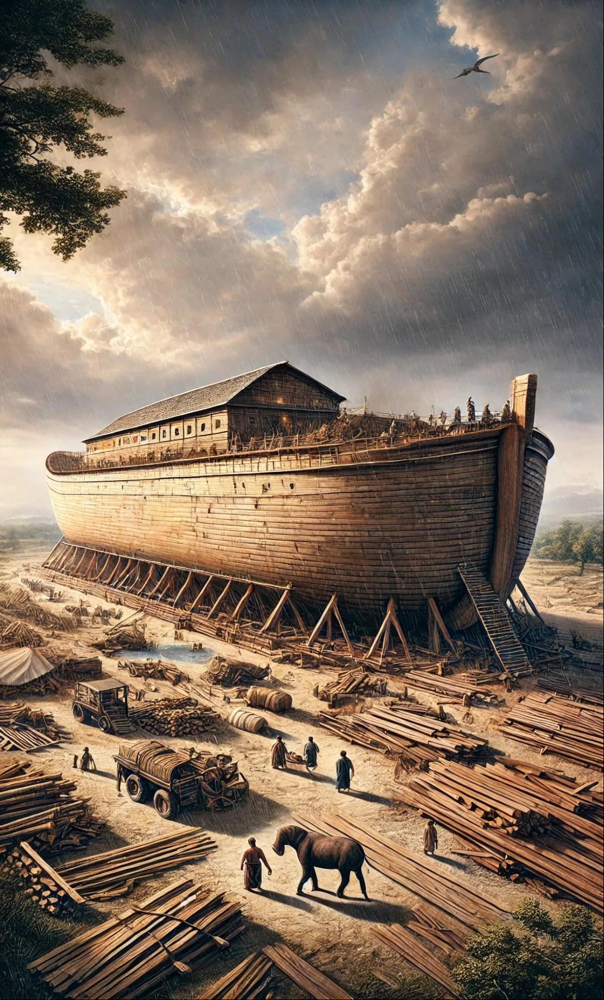
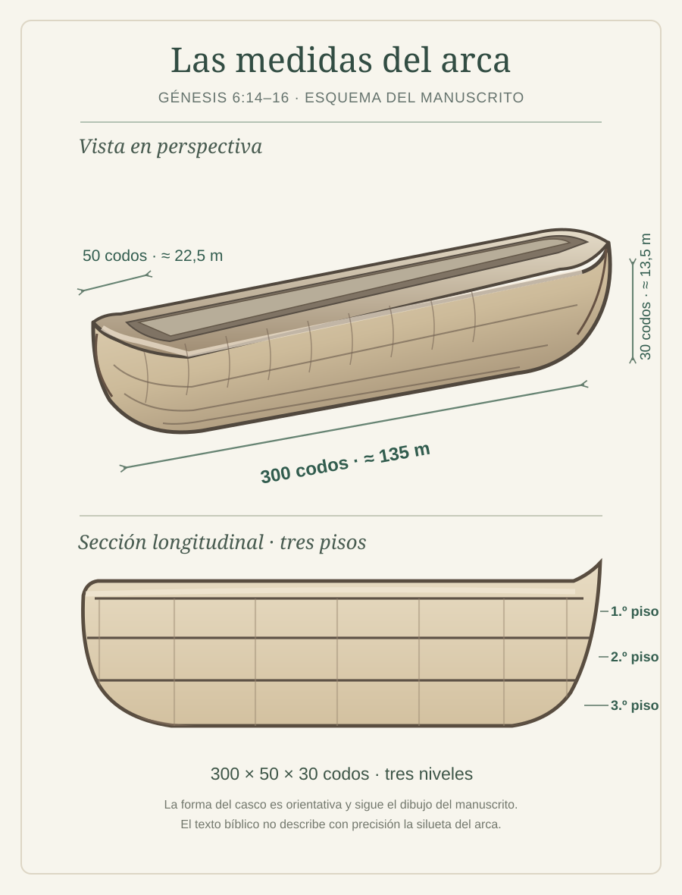

Apéndices / Objetos y símbolos
Objetos y símbolos
Arca de Noétēḇâ

Gran estructura flotante de madera cuya construcción fue ordenada por Dios a Noé para preservar a su familia y a los animales durante el Diluvio. Según Génesis, fue construida siguiendo instrucciones divinas y revestida con brea para impedir la entrada del agua. Su diseño exterior exacto es desconocido.
Hechos bíblicos
En Génesis 6:13-22, Dios anuncia a Noé su decisión de destruir la tierra a causa de la corrupción y violencia de sus habitantes. Le ordena construir un arca de madera de gofer, dividida en compartimentos y calafateada con brea por dentro y por fuera. También le proporciona instrucciones acerca de sus dimensiones y distribución interior.
Dios establece que Noé, su esposa, sus tres hijos —Sem, Cam y Jafet— y las mujeres de estos entren en el arca, junto con los animales que deben ser preservados y los alimentos necesarios para su mantenimiento (Gn 6:18-21).
En Génesis 7:2-3, Dios especifica que deben entrar siete parejas de cada animal limpio y de las aves, mientras que de los animales impuros debe conservarse una pareja. Noé cumple estas instrucciones y, una vez que todos han entrado, Dios cierra la puerta del arca (Gn 7:16).
Durante el Diluvio, el arca flota sobre las aguas mientras la lluvia cae durante cuarenta días y cuarenta noches. Posteriormente, cuando las aguas comienzan a retirarse, reposa sobre los montes de Ararat (Gn 8:4).
Noé abre la ventana del arca y envía primero un cuervo y después una paloma para comprobar el estado de las aguas y de la tierra (Gn 8:6-12). Finalmente, por mandato divino, Noé, su familia y los animales abandonan el arca (Gn 8:15-19).
Características y usos
Según Génesis 6:14-16, el arca debía construirse con madera de gofer, cuya identificación botánica exacta continúa siendo desconocida. La estructura debía dividirse en compartimentos y protegerse contra las filtraciones mediante un revestimiento de brea aplicado tanto en el interior como en el exterior.
Las dimensiones establecidas por Dios eran las siguientes:
- Longitud: 300 codos, aproximadamente 137 metros.
- Anchura: 50 codos, aproximadamente 23 metros.
- Altura: 30 codos, aproximadamente 14 metros.
Estas equivalencias son orientativas y dependen de la longitud asignada al codo antiguo.

El arca debía contar con tres pisos o niveles, una puerta situada en uno de sus lados y una abertura superior que la RVR60 traduce como «ventana». La interpretación exacta de esta última disposición es discutida, pues también se ha propuesto que hiciera referencia a un elemento de iluminación o a la estructura del techo.
El texto bíblico no describe con suficiente detalle la forma exterior de la embarcación, la distribución de sus compartimentos o los procedimientos concretos utilizados para su construcción. Tampoco menciona mecanismos de propulsión ni de gobierno, como velas, remos o timones.
Por tanto, las reconstrucciones modernas del arca deben considerarse representaciones hipotéticas basadas en los datos conservados en Génesis.
Simbolismo
Salvación y protección divina. El arca constituye el medio dispuesto por Dios para preservar la vida de Noé, su familia y los animales frente a la destrucción provocada por el Diluvio. Su función protectora expresa la provisión divina en medio del juicio (Gn 6:17-20).
Fe y obediencia. En Hebreos 11:7, Noé aparece como ejemplo de fe por haber preparado el arca después de recibir una advertencia divina acerca de acontecimientos que todavía no había visto. Su obediencia implicó perseverar durante un período prolongado, cuya duración exacta desconocemos, aunque tradicionalmente se ha estimado en torno a cien años. En 1 Pedro 3:20 se recuerda que Dios aguardó pacientemente mientras se preparaba el arca, vinculando su construcción con un tiempo de espera anterior al juicio.
Preservación de la vida y nuevo comienzo. La salida del arca después del Diluvio marca el comienzo de una nueva etapa para la humanidad y los seres vivos. Dios bendice a Noé y a sus hijos y les ordena fructificar y multiplicarse, retomando el mandato de la Creación (Gn 9:1).
Salvación y bautismo. En 1 Pedro 3:20-21, el apóstol recuerda que ocho personas fueron salvadas a través del agua en tiempos de Noé y establece una correspondencia entre aquel acontecimiento y el bautismo cristiano, cuya eficacia vincula a la resurrección de Jesucristo.
Etimología
El término hebreo tēḇâ (תֵּבָה), traducido como «arca», designa la estructura construida por Noé para sobrevivir al Diluvio.
La misma palabra aparece en Éxodo 2:3-5 para designar la arquilla en la que la madre de Moisés depositó al niño y lo dejó entre los juncos del Nilo. Ambos objetos tienen una función semejante de protección de la vida frente al agua, aunque sus dimensiones y materiales son diferentes.
Se ha propuesto que el hebreo tēḇâ proceda de una palabra egipcia relacionada con una caja, cofre o recipiente, aunque su etimología no está completamente establecida.
El término debe distinguirse de ʾărôn (אֲרוֹן), utilizado para designar el Arca del Pacto y otros cofres o arcones. Aunque la RVR60 emplea «arca» en ambos casos, el texto hebreo utiliza palabras diferentes.
Referencias
Gn 6:13-22; 7:1-24; 8:1-19; 9:1; Ex 2:3-5; Heb 11:7; 1 P 3:20-21.